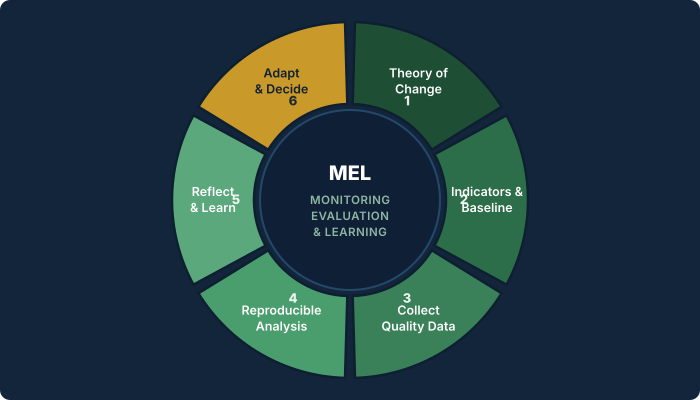

Most conservation projects collect a lot of data. Far fewer turn that data into decisions. That gap is exactly where Monitoring, Evaluation & Learning (MEL) lives, and getting it right is the difference between a project that simply reports activity and one that genuinely learns and improves over time.[1]

At a glance
- MEL matters when it informs decisions, not only reports.
- A Theory of Change helps define what is worth measuring.
- Honest baselines and reproducible analysis make trends credible.
- Learning only works when teams review and adapt together.
Over several years leading MEL for landscape programmes in West Kalimantan, I have watched the same pattern repeat itself: field teams work hard, dutifully fill in their forms, and then the data disappears into an annual donor report that almost nobody reads twice. This primer is about avoiding that trap. It is written for conservation practitioners rather than statisticians, and it focuses on the habits and structures that make MEL genuinely useful, whether the work is patrol-based protection or the carbon and biodiversity projects now reshaping conservation finance. Where it helps, I point to the wider body of practice and research that these habits are built on.
1. Reporting is not the same as learning
MEL is often quietly reduced to a single word: reporting. Yet reporting and learning answer two very different questions. Reporting looks backward and satisfies a donor: what did you do with the money? Learning looks forward and serves the team: what should we do differently next season, and why?
Both matter, but only the second one changes outcomes on the ground. Reviews of monitoring and evaluation in conservation have repeatedly found that projects invest heavily in tracking activities while under-investing in the evaluative thinking that turns those numbers into better decisions.[2] A healthy MEL system therefore produces reports as a by-product of learning, not the other way around. A simple test: if an indicator only ever appears in a report, and never in a team discussion, it is not yet doing its job.
2. Start from a clear Theory of Change
Before choosing a single indicator, be explicit about the causal logic of your project. A Theory of Change sets out how and why a given set of activities is expected to lead to results, usually in the form if we do X, then Y changes, which contributes to Z.[3] Making that logic explicit tells you precisely what is worth measuring and, just as importantly, what is not.
Without it, teams tend to measure what is easy to count, such as the number of patrols run or workshops held, rather than what actually signals impact, such as reduced threats or recovering wildlife populations. For a patrol-based protection project the causal chain might run from more effective patrols, to fewer active threats, to lower forest loss, and finally to stable or increasing wildlife populations. Every link in that chain is a place where a well-chosen indicator earns its keep, and every link is also an assumption you can test as evidence accumulates.
3. Anchor progress with honest baselines
You cannot credibly claim change without knowing where you started. This is why management-effectiveness tools such as the Management Effectiveness Tracking Tool (METT) are so widely used: they provide a structured, repeatable, and comparable baseline for protected-area management.[4][5] The absolute score matters far less than the discipline of measuring the same thing, in the same way, at regular intervals, so that a trend over time becomes meaningful rather than anecdotal.
Be honest about baselines even when they are unflattering. A low starting score is not an admission of failure; it is the very evidence that makes any later improvement credible and defensible to the partners and donors who fund the work.
4. Good decisions need good data
MEL is only ever as strong as the data feeding it. In practice this means investing in the unglamorous work of data quality: standardised field protocols, field teams who are trained and supported, and tools that reduce human error at the very moment of collection.
Structured field systems such as the Spatial Monitoring and Reporting Tool (SMART), camera-trap arrays, and systematic biodiversity surveys are valuable not simply because they gather data, but because they gather it consistently and in a form that can be verified later.[6] That consistency is what allows you to compare this season with the last one and to trust the difference you observe, rather than wondering whether it is an artefact of who collected the data, or how.
5. Make the analysis reproducible
When analysis lives in a tangle of spreadsheets that only one person fully understands, MEL becomes fragile, slow, and hard to audit. Building the analysis as a reproducible pipeline, in my case usually in R, pays for itself quickly: the same script that produced last quarter's summary will produce this quarter's from fresh data, free of copy-and-paste errors, and in minutes rather than days.
Reproducibility is not only an efficiency gain, it is a trust signal. A donor, a government partner, or a colleague who inherits the work can follow exactly how each number was produced and satisfy themselves that it is sound. Keeping every step scripted, documented, and version-controlled is now widely recommended as basic good practice for any data-driven work, well beyond conservation.[7]
6. Close the loop: the step everyone skips
The "L" in MEL is the part most projects quietly drop. Learning means deliberately setting aside time to ask a deceptively simple pair of questions: what is the data telling us, and what will we change because of it? A short reflection session after each monitoring cycle, held with field teams in the room and not only managers, is what turns raw numbers into concrete decisions. This is the heart of adaptive management, the idea that a project should treat its own actions as hypotheses and adjust them as evidence comes in.[8]
Crucially, learning has to feel safe. If negative or surprising results are punished, teams quickly learn to hide them, and the MEL system slowly fills with comfortable fictions. A mature MEL culture, of the kind encouraged by the widely used conservation planning standards, treats an unexpected result as valuable information rather than as a mistake to be buried.[1]
7. When MEL meets climate finance
Increasingly, MEL in conservation is not only about protecting biodiversity for its own sake, it is also what unlocks and sustains the funding that pays for that protection. Nowhere is this clearer than in the fast-growing world of carbon and biodiversity projects, where credible monitoring and evaluation is a precondition of the finance itself, not an afterthought.
Carbon-linked standards make the expectation explicit. The Climate, Community & Biodiversity (CCB) Standards, developed by the Climate, Community & Biodiversity Alliance and administered by Verra since 2014, require every project to put a monitoring plan in place and to demonstrate net climate, community, and biodiversity benefits through independent, third-party verification involving both desk and field audits.[9] In practice this means the quality of a project's MEL directly determines whether its outcomes, and often the carbon credits attached to them, are recognised at all.
The same logic drives performance-based conservation finance. Mechanisms such as the Rimba Collective, managed by Lestari Capital, channel long-term corporate funding into forest protection and restoration across Southeast Asia and release that funding against monitored, verified results rather than promises.[10] Here MEL is not paperwork produced at the end of a project; it is the instrument that connects money to measurable outcomes on the ground.
In my own consulting work, applying MEL and biodiversity assessment to exactly these carbon and biodiversity projects, I have seen how much rests on getting the monitoring right: robust field data and transparent, reproducible analysis are what make a project both fundable and trustworthy, whether it is a REDD, an afforestation and reforestation (ARR), or an improved forest management (IFM) activity.
Why this matters in practice
In carbon and biodiversity finance, weak MEL does not only create reporting gaps. It can affect whether outcomes are credible enough to be verified, funded, and trusted by project partners.
A short checklist
- Can you state your Theory of Change in one sentence?
- Does every indicator map to a step in that logic?
- Do you have an honest baseline you can repeat?
- Are field protocols standardised and teams trained?
- Can someone else reproduce your analysis from raw data?
- Do you hold a structured reflection after each cycle?
None of this requires expensive software or a large team. It requires clarity about why you are measuring, discipline in how you collect, and the courage to act on what you find. Do those three things consistently and MEL stops being paperwork; it becomes the quiet engine that keeps a conservation project honest, accountable, and steadily improving.
References
- Conservation Measures Partnership (2020). Open Standards for the Practice of Conservation, Version 4.0. Available at: conservationstandards.org.
- Stem, C., Margoluis, R., Salafsky, N. & Brown, M. (2005). Monitoring and evaluation in conservation: a review of trends and approaches. Conservation Biology, 19(2), 295–309.
- Vogel, I. (2012). Review of the use of ‘Theory of Change’ in international development. UK Department for International Development (DFID).
- Hockings, M., Stolton, S., Leverington, F., Dudley, N. & Courrau, J. (2006). Evaluating Effectiveness: A Framework for Assessing Management Effectiveness of Protected Areas, 2nd ed. IUCN WCPA, Gland.
- Stolton, S., Hockings, M., Dudley, N., MacKinnon, K., Whitten, T. & Leverington, F. (2007). Management Effectiveness Tracking Tool (METT), 2nd ed. WWF International & World Bank.
- SMART Conservation Software (2024). How We Use SMART. Available at: smartconservationtools.org.
- Sandve, G.K., Nekrutenko, A., Taylor, J. & Hovig, E. (2013). Ten simple rules for reproducible computational research. PLoS Computational Biology, 9(10), e1003285.
- Salafsky, N., Margoluis, R., Redford, K.H. & Robinson, J.G. (2002). Improving the practice of conservation: a conceptual framework and research agenda. Conservation Biology, 16(6), 1469–1479.
- Verra (2024). Climate, Community & Biodiversity (CCB) Standards. Established by the CCB Alliance in 2004; administered by Verra since 2014. Available at: verra.org/programs/ccbs.
- Lestari Capital (2024). The Rimba Collective: Delivering Forest Conservation and Restoration at Scale. Available at: rimbacollective.com/about; see also Green Finance Institute case study.